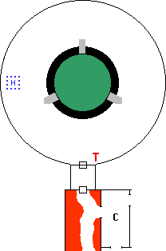
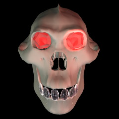
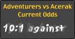
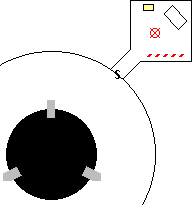

he Vrock slashed at Mystical, passing harmlessly through her intangible form.
She encased the demon in a cubical Wall of Ice, and then Rapid
Gravity Shifts flung it about within. Not content to leave it at that,
she created a Barrier Pit under the icy cage to drop the whole thing
into the Negative Material Plane.
he Vrock slashed at Mystical, passing harmlessly through her intangible form.
She encased the demon in a cubical Wall of Ice, and then Rapid
Gravity Shifts flung it about within. Not content to leave it at that,
she created a Barrier Pit under the icy cage to drop the whole thing
into the Negative Material Plane.
Meanwhile, Rosvenir had inhaled some sort of spore from the demon
when it attacked. As he stumbled back green vines began to erupt painfully
from his body. He flew down the tunnel and through the gate, collapsing in a
heap in front of his companions. The vines had begun to constrict and hamper
his breathing, but somehow the mage cast Neutralize Poison which
stopped further spread. Kurik cut away at the vines until Mystical returned
and cast Unpoison. The demonic foliage immediately withered and died.
Kahlen, lost in thought for her old friend, noticed a note in her
lap. She had no idea how it got there, nor how long it had been there. She read it with growing alarm: it was from Haer. He
claimed that Kurik had been responsible for his disappearance, and for the magical assault on the party the previous
day. The note claimed that Kurik was a Vampire. Kahlen circulated the note to
the rest of the party sans Kurik. Each adventurer contemplated the revelation
of Kurik's condition, but weighed this against the fact that he had done
nothing overtly evil and retained the favor of his god Pandeos. The group
collectively decided that Kurik posed no threat, and made no move against the
vampire. [Editor's note: the player of Haer attributes this inaction to a
staggering display of roleplaying apathy.]
Now determined to recover their comrade Haer
Gronagin, the entire party cast various Fly spells and marched through
the gate. Mystical led the way, and spotted the halfling at the mouth of the
tunnel on the other side. Haer looked startled and immediately ran away
towards the trap door. Mystical attempted Levitation to stop him in his
tracks, but could not lock onto anything. Rosvenir's Finding spell did
not locate the halfling, and Mystical's Presence found only five (two
fewer than before). Obviously what she
had seen had been an illusion, as Haer was no longer in this portion of the
Fortress of Conclusion.
Crossing back through the gate, the party marched through the
pentagonal room, and used Fly to cross the W.O.S.M.U. In the relative safety
of these central chambers, Rosvenir cast Mind Voice to attempt
communication with Haer Gronagin. Receiving no response, a Finding
spell located him somewhere beyond the laboratory. Kurik's Detect
Enemies located approximately 100,000, mostly the disparate elements of
the W.O.S.M.U.
With Woodsight Meilu could see a 10' square room beyond the
furthest door. The party gathered in this small chamber, in front of an iron
door set in the opposite wall. Stonesight revealed the room beyond.
Meilu's report to the High Priestess of the Goddess

At first the Stonesight revealed only blackness, though not the
oily blackness of the Negative Material Plane. I augmented the spell with
Darkvision, and could at last perceive what lay ahead. It was a large
domed chamber, some 50 feet across. In the center of this chamber, supported
by a huge metal tripod, was what could only be the Phylactery of the Devourer.
It appeared as a green gemstone nearly 20 feet across. In a way it was
beautiful, though as the Goddess teaches, beauty is sometimes a shield to hide
the appearance of Evil. That was definitely the case here. I could see the
faces of the lost souls pressed up against the facets of the crystal. A
horrible fate, to be sure.
In the floor of the chamber directly beneath the Phylactery was a
circular hole, exposing the Final Void beneath. The hole was large enough to
accomodate the crystal. My companions have said that the Devourer's plan is to
merge with the Final Void, upon which
all knowledge would be his and he would become unto a God. I believe the
Phylactery is the instrument by which Acerak would carry out this evil plan.
A disembodied skull floated near the ceiling. As it slowly
descended, I could see the two red gems in its eyesockets and a row of 6
diamonds replacing its teeth. This could only be the demilich, Acerak. At the
edges of my vision through the doorway I spotted a massive arm holding a whip.
It was a demon, standing next to the doorway on the other side of the wall. My
vantage was poor but I believed it to be Tarnhem, Acerak's demonic father. We
thought we had released Tarnhem from enslavement. Apparently not.
At the far side of the room was a metal cage, and inside the cage
was Haer Gronagin. The halfling sat motionless, and appeared to be crying.
While plans were laid for the assault I continued to watch the Phylactery, and
noticed the face of Haer Gronagin in one of the facets. The Devourer had
already consumed his soul, but left the body nearby.
The Narrator
The final confrontation with Acerak lay ahead. The party took a few
minutes to prepare, and to develop a strategy. The mad priest Danele had revealed that the Phylactery
could be destroyed by the light of the Sun. The Wand of Days therefore represented the
best hope of defeating the Devourer. Accordingly, in addition to Rosvenir both
Fineas and Mystical attuned to it. The party proceeded to cast a huge amount
of defensive and preparatory magic.
At last all was in readiness. Fineas cast Unstone to destroy the wall surrounding the iron door, and it crashed inwards with a clatter. Zem was already in motion, his Moving Attack unbalancing the Balor and causing it to stagger back. The floating skull turned to face the adventurers, and as the melee commenced announced in rasping voice, "Through hazard and danger you have made your way here, passing challenges both martial and cerebral. The journey was a hard one, but with each test you bested, your souls were further purified, until you stand before me now with empowered, shining spirits visible to those with eyes to see. I have use for such souls; you will provide the final catalyst for my union with the Negative Energy Plane itself! Let the Apotheosis begin!"
Rosvenir heard a clatter at his feet. The
Wand of Days had fallen to the ground. He did not think he had dropped it, but
bent down to retrieve it nonetheless. He rose slowly, a look of horror on his
face as he stared at the flesh covered stumps where once his hands had been.
Rosvenir screamed.
Tarnhem's whip snaked between the legs of the adventurers as if a
thing alive. It coiled about the Wand, and a flick of the demon's wrist sent
the artifact flying through the air. The Wand landed with an audible plop in
the oily blackness at the exposed center of the room, and sank from sight.
Fineas switched to Alternate Plan B, such as it was. He cast
Unstone beneath one of the three legs holding up the Phylactery. The
leg plunged through and into the Negative Material Plane until striking the
side of the hole thus created. The structure shifted several feet, the whole
canted at an angle to the floor. Even as the Phylactery settled the souls
within pressed up against the facets of the gem and shouted in unison:
"To destroy Acerak's Phylactery is to destroy us as well. The Void will
claim our spirits forever!" Obviously the trapped souls were not fond of
Alternate Plan B.
Endira recast Controlling Song, and this time it succeeded.
Acerak's control of Tarnhem was broken, and Endira ordered the Balor to
"destroy Acerak."

Even as the demon turned to face his progeny,
the air within the square room began to thin drastically. Endira, sensing what
was happening, managed to avoid the shockwave from the Major Vacuum
which struck next, and her song was unaffected. Kahlen, Fineas, and Rosvenir
were not so lucky, suffering broken bones and concussive damage. Rosvenir
returned fire with a Vacuum I on Acerak, but did no damage to the
demilich.
In booming voice the skull of Acerak called out, "Maasgheldur by
use of your True Name I command you!" Endira's Controlling Song
was broken, and Tarnhem turned to attack the party. The struggle for control
must have jarred the demon's concentration as his sword missed Zem by almost a
yard. Zem parried the demon's whip, and counterattacked using Holy Attack
True. A total attack roll of 290 was sufficient for only 9 points of
damage against Tarnhem. Meilu, previously Hasted by Fineas, executed
martial strikes in rapid succession but did very little damage to the demon.
Clearly, this battle would not be won by
wearing down the opponents. Then Zem heard a clattering as his Claymore hit
the floor. He knew what had happened even before looking: his hands were gone.
The sword lay still only briefly before being roused by its unsatisfied hunger
for blood, flying up to attack indiscriminately. Fortunately the sword had
fallen close to the Balor, and chose the demon as its first target.
Suddenly there was a disturbance in the
exposed circle of the Final Void. The Wand of Days rose majestically from the
oily blackness. Safe from the ravages of the Negative Material Plane due to
his vampiric nature, Kurik had retrieved the Wand and now clutched it tightly
in one gauntleted hand. Erupting from the nothingness Kurik moved with
preternatural speed across the chamber to give the Wand to Fineas. Fineas in
turn held the Wand crooked in one arm (in case he suddenly found himself
lacking hands).
Now aware of Tarnhem's True Name, Rosvenir's Voice of Command
was greatly enhanced: "Maasgheldur, destroy Acerak." The huge demon
turned and flew back towards the floating skull.
The party was suffering badly from the effects of powerful spells.
Kurik paused to cast Inspiring Ways, invoking the power and glory of
Pandeos to assist his companions in resisting the effects of magic.
Tarnhem's powerful blow sent the skull flying across the room to impact
the far wall. A crack appeared in the skull, echoing the much larger crack
made in the wall. Wobbling slightly in the air, Acerak spoke: "Father by
your True Name Maasgheldur I command you!" Rosvenir's control was
sundered.
Fineas touched the wand, still clutching it with one arm. He made a
rude gesture at the floating skull with his other hand as he spoke the command
word: "kindle"... Nothing happened. The power of the Wand was
completely absorbed by the unnatural darkness in the room.
Endira had also incorporated the Balor's True Name into her song.
Augmented by its power, her Controlling Song wrested mastery of the
mighty demon away from the demilich. The demon turned to face Acerak once
again.
Zem, his combat effectiveness greatly
reduced by the maiming, turned Invisible and waited for an opportunity.
Fineas felt the hint of a spell beginning to effect him. He used the absorption stone to counteract
the incoming magic. The stone, having reached its capacity, disintegrated into
dust.
Meilu leaped high into the air, launching multiple attacks on
Acerak as she soared past. Though very impressive (like something out of a
kung fu movie) the attack did no damage to the skull. However, Tarnhem's sword
struck true and sent his hated son slamming into another wall with ruinous
effect. Acerak's skull looked somewhat the worse for wear, with numerous
cracks scattered across its surface.
Acerak spoke once again, commanding Tarnhem to attack the party and
invoking his True Name. The Balor turned to face the adventurers.
Kurik's Utterlight had no effect, completely subsumed by the
powerful magical darkness cloaking the room. Rosvenir cast Utterlight V
with similar results: none of the five was able to overwhelm the magical
blackness.
Fineas resisted some sort of
magical attack, and flew to the opposite side of the room to place the bulk of
the Phylactery between himself and the rest of the conflict. He failed another
resistance roll as he flew, and sustained heavy damage from some sort of
magical attack. The mage persevered, and set the Wand directly against the gem
as he triggered its power. The tip barely glowed, and the Phylactery was
undamaged. The magical Dark had withstood the power of the Wand once again.

Tarnhem (under the control of Acerak at this time) soared through
the air towards Fineas, planning to take the Wand away. Zem, Invisible
and flying, intercepted the huge demon with a perfect tackle. Deflecting
Tarnhem away from the mage, he and the demon plummeted to the floor below.
Zem, bloodied and bruised, failed to resist the effect of the Phylactery. His
body crumpled to the ground as his life force was sucked out to join the rest
of the souls trapped within.
Kurik's second Utterlight was no more effective than his
first. Now out of power points, the paladin hefted his battleaxe and charged
the mighty Balor.
Fineas had flown back to the ground.
Turning now to face the center of the room, he was overcome by a magical
attack which knocked him unconscious before he could activate the Wand again.
He fell to the floor. Rosvenir, a short distance away, dove for the artifact
still gripped tightly in the elf's hand.
Weakened by the combat, Acerak's control of his demonic father slipped
and Endira's Controlling Song triumphed. Tarnhem must have been quite
dizzy by this time, as he spun about to face the flying skull.
Rosvenir touched the stump of his missing hand to the Wand of Days
and spoke the word: "kindle." The Wand responded. Finally its power
overcame the darkness, and painfully bright light erupted from its tip. As
the light swept the room it came into contact with the Phylactery, and cracks
immediately spread across its surface. A golden beam of light smashed through
the top of the Phylactery and punched a hole in the stone ceiling above. The
golden light pulsed as first one, then two, then a flood of souls escaped
the confinement.
Kurik, his Vampiric nature unable to tolerate the touch of
sunlight, burst into flames. He conjured a Light Barrier to shield
himself. However, nothing could shield Acerak from the destruction of his
Phylactery. Rasping out, "I am undone... For now..." the skull
tumbled to the floor and shattered into pieces.
The flood of souls escaping the Phylactery began to ease. Three of
the last souls to escape moved away from the golden light and into the room.
Appearing as glowing orbs of scintillating hues, two of the souls moved to the
inert bodies of Mystical and Zem. Mystical gasped as her soul reunited with
the flesh, while Zem simply opened his eyes and sat up. Kahlen rushed over to
help them reorient, using up a ring of stored Clerical spells in the process.
The third soul approached Haer Gronagin, who had been sitting in
the steel cage weeping softly during the entire battle. The orb of light
flashed a darker hue and moved rapidly about the motionless halfling. Haer's
body shuddered and twitched, as if resisting the reunitement. Finally, a
silver hued ball of energy was ejected from the halfling, as the body
screeched an almost feminine scream. The silver energy began to break apart
immediately, dissipating to nothingness.
Haer looked up from the ground. He had no idea how he had come to be there, and thought he was in Moil. His body had been taken over by Ferranifer, one of Acerak's minions, when the party had reached Moil the week before. He found that the bars containing him were only illusions, and walked out into the room.
The radiance of the Wand of Days had not faded, and Kurik remained within his protective darkness. Suddenly this blackness was illuminated by a bright beam of golden light, radiating from a point immediately above the paladin. A booming voice called out, "Holy Kurik, thou hast done well. I hast promised to release thee from thy torment." Kurik was freed from his vampiric affliction by the power of Pandeos. His body mouldered instantly to dust, leaving only a radiant spirit. Pausing briefly to smile at his former companions, the angelic Kurik ascended to the heavens to join the Heavenly Host of his god.
With the destruction of Acerak Tarnhem regained free will, shouting, "Now I am truly free!" He opened a gate to return to the Abyss, but paused at the threshold. "I did promise to help you escape. Beyond this room are two means of escape. One will lead to your exit, the other will lead to your deaths." With that, the Balor was gone.
Mystical and Zem, weakened by the experience of having their souls ripped out, needed an hour to recuperate. Rosvenir, unable to stop thinking about the trove of knowledge in Acerak's library, convinced Haer to retrieve the books. Unfortunately Acerak had left traps, and Haer was hit by a Firebolt when he tried to remove one from the shelves. Unable to tolerate any more whoop-ass that day, the two adventurers left the library.
The Phylactery was cracked and ruined, and listed to one side on its
damaged tripod. While Rosvenir and Haer explored the library Fineas completed
Alternate Plan B, destroying another leg of the tripod. The huge gem tipped
over and was swallowed by the Negative Material Plane.

Tarnhem had indicated the far wall of the chamber
held two exits. Haer immediately noted a secret door in the wall, and located
the mechanism a moment later. Haer was obviously a much better thief than
Ferranifer. Rosvenir, ignoring the loss of his hands through sheer force of
will, cast Presence. There were two 16th level entities remaining in
this portion of the Fortress, the first an undead fighter and the second an
amphibian of some sort. Haer opened the secret door and crept silently down
the hallway. The halfling's stealth was such that the Winter Wight at the end of the hall did not
detect him. The Wight sat on a stool in a square room, the walls stained
reddish brown. In the far corner was a wrought iron table with a stone top,
upon which lay several gems and other items. A wooden chest sat next to the
table, and a leering green mask hung on the wall.
Haer crept back down the hall to relate his findings. The entire
group entered the secret room. Fineas activated the Wand of Days before the
Wight had even stood to deliver its soliloquy, so tired were they of undead.
Haer located no traps on the chest, nor anywhere else in the room for that
matter. Along the closest wall was a strange scintillating tapestry, more like
a tear in space than cloth. Endira identified it as the Maelstrom Gate, which
only Undead can safely traverse. There were an assortment of items on the table, including a silver whistle shaped
like the Phantom Flyer. Fineas attuned to it: if blown within range of the
Flyer it will come, and take you wherever you wish to go.
The party was dreadfully weakened by the battle, and nearly out of
power for spells. Even a slight threat might do them serious harm. Therefore
they set up camp in the secret room, and got some much needed rest. Rosvenir
cast Dream IV to learn of what was to come.
Rosvenir's Dream
in the library... cast a powerful Dispel Arcane, powerful
enough to remove the magical traps of the demilich... now touch the books, no
fireball emerges... open one book, inside its covers is the contents of the
chest... filled to the brim with treasure... buried within the coinage is a
gateway to the Prime... sitting on the Phantom Flyer, about to land on the
Prime... the mask lays on the ground... it grows to twenty times its size,
takes a huge bite out of the ground and begins to chew...
Day 32, Final Day
Rosvenir finally gave up on collecting the tomes in Acerak's
library. Dispelling a 100th level Arcane spell would take forever. The chest
was locked, but the key rested in it. Haer opened it, and a sharp intake of
breath greeted the vast wealth therein.
Thousands upon thousands of coins, numerous gems, and copious magic items
awaited the adventurers. They filled the Bag of Holding, plus the
extradimensional Hewards Handy Haversack found amongst the items, and
still didn't manage to gather it all. The remaining coinage was placed in the
tithing bag of Pandeos, a final homage to the brave Sir Kurik Steadfast. The
party hoped that no-one would be injured by the avalanche of gold when the
tithing room was opened.
Fineas blew the silver whistle, and noted that it teleported back to its place on the table after sounding. He retrieved it, as one never knows when such a thing might come in handy. The Phantom Flyer rose up from the hole in the center of the room and perched on the stone floor. The party climbed aboard, held on as best they could (the unfortunates without hands were tied in), and said, "the Free City of Greyhawk." Snuggles, aka the Phantom Flyer, dove back into the Negative Material Plane and thence to the Prime, depositing the weary adventurers just outside the city gates. Kahlen made arrangements for restoration of Zem and Rosvenir's hands by the Guild of Healers of the High Elves.
Additionally the characters were given special rewards for successfully completing the Return to the Tomb of Horrors: